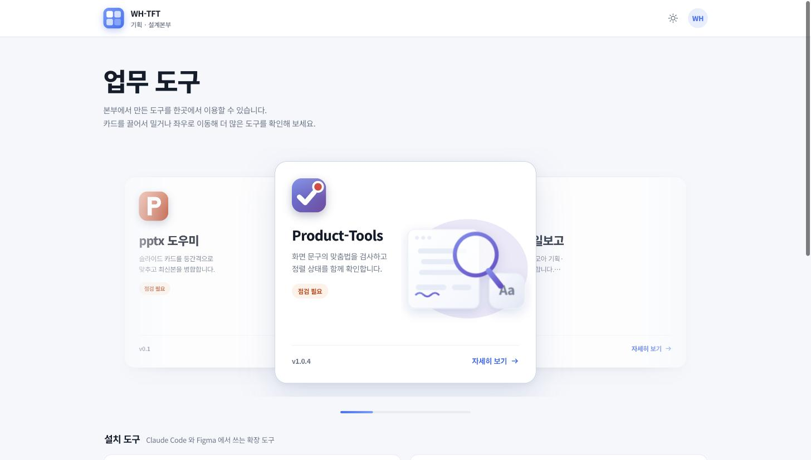
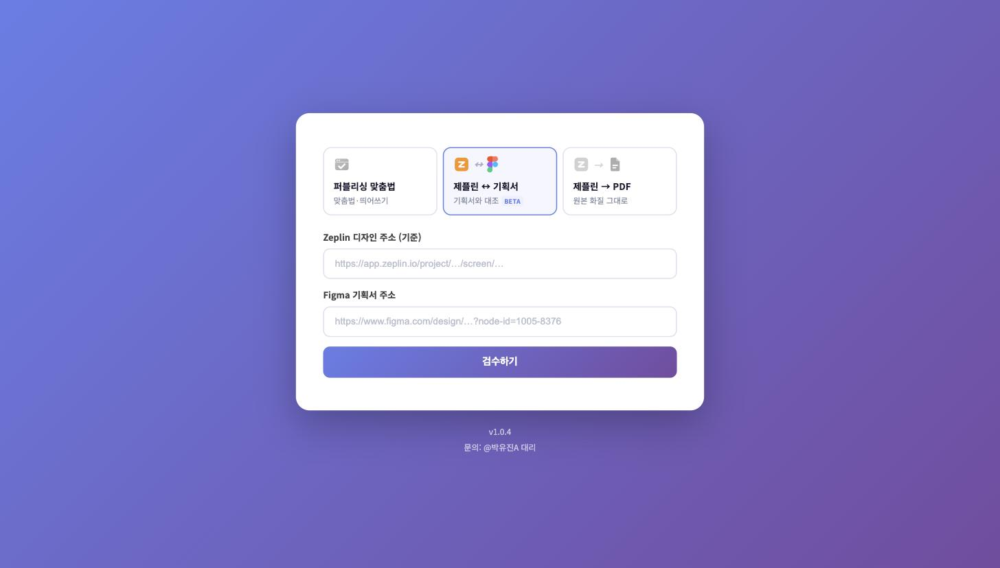
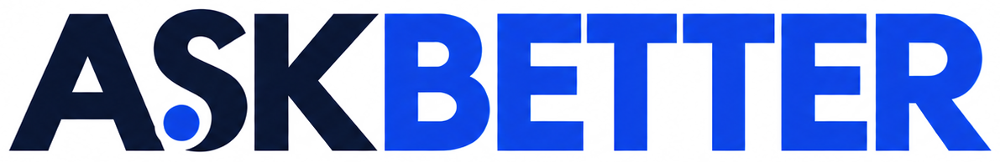

사내 도구 포털 / 기획서 대조 도구
더 나은 제품은 어디서 시작될까?
박유진 Product Manager
질문을 던지고, 제품으로 답했습니다.


사내 도구 포털 / 기획서 대조 도구
여러 사람이 손으로 되풀이하는 일, 복잡해서 아무도 다시 묻지 않게 된 업무를 좋아합니다.
답을 정하기 전에 질문부터 다시 씁니다. VOC와 데이터로 무엇이 진짜 문제인지 먼저 확인합니다.
쓰는 사람이 설명 없이도 이해할 수 있는지를 봅니다.
 더존비즈온2024.11–2026.09
더존비즈온2024.11–2026.09
아라데브 · 프리랜서2024.01–2024.07 Figma
Figma
 Sketch
Sketch
 Claude Code
Claude Code
 Google Analytics
Google Analytics
 Confluence
Confluence
 Jira
Jira